Keyboard
keyboardA keyboard is an input device that sends key events to software.
Also accepted: computer keyboard
Download SVG225 SVG visual clues: 100 Beginner · 75 Moderate · 50 Expert. This catalog displays answers for teacher review.
Beginner artwork uses licensed Lucide icons and custom device drawings. Advanced clues use custom diagrams and code examples. See ASSET-LICENSES.md.
A keyboard is an input device that sends key events to software.
Also accepted: computer keyboard
Download SVGA mouse translates hand movement into pointer movement on a screen.
Also accepted: computer mouse
Download SVGA monitor displays visual output from a computer.
Also accepted: display, computer screen
Download SVGA CPU executes program instructions and performs arithmetic and logical operations.
Also accepted: processor, central processing unit
Download SVGSystem RAM holds working data and usually loses its contents when power is removed.
Also accepted: random access memory, memory
Download SVGA hard drive stores data magnetically on rotating platters.
Also accepted: hard disk, hdd, hard disk drive
Download SVG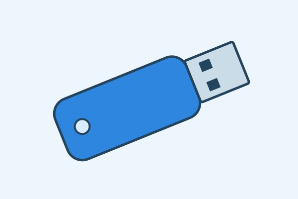
Flash memory retains stored data without continuous power.
Also accepted: flash drive, usb drive, thumb drive
Download SVGA router forwards packets between networks.
Also accepted: wifi router, wireless router
Download SVG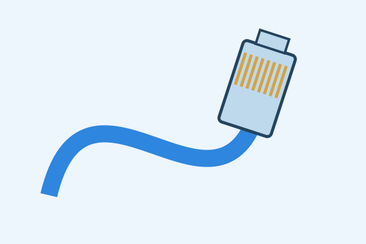
Twisted-pair Ethernet cables carry network data over copper wires.
Also accepted: network cable, lan cable, rj45
Download SVGA server provides services or resources to other computers.
Also accepted: server rack, rack server
Download SVGA printer converts digital documents into physical output.
Also accepted: computer printer
Download SVGA webcam captures video for a computer or network application.
Also accepted: web camera
Download SVGA database organizes information so software can retrieve and update it.
Also accepted: relational database
Download SVG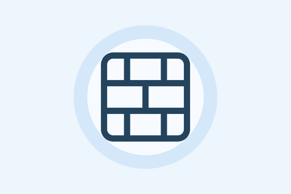
A firewall permits or blocks network traffic according to rules.
Also accepted: network firewall
Download SVGCloud computing delivers computing resources over a network.
Also accepted: cloud, cloud storage
Download SVG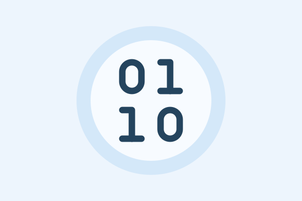
Binary represents numbers using only the digits zero and one.
Also accepted: binary code, base 2
Download SVGA flowchart uses connected shapes to show steps and decisions in a process.
Also accepted: flow chart
Download SVGA motherboard connects the processor, memory and other computer components.
Also accepted: mainboard, system board
Download SVGA laptop combines a screen, keyboard, battery and computer in a portable enclosure.
Also accepted: notebook computer, notebook
Download SVG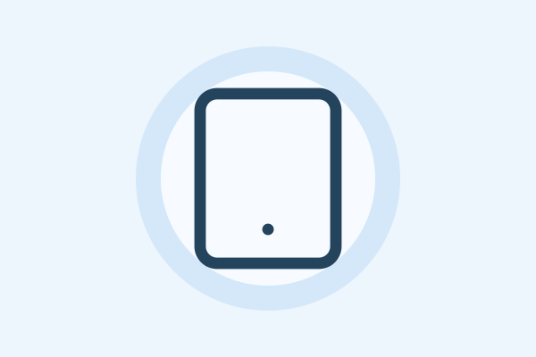
A tablet is a portable computer commonly operated through a touchscreen.
Also accepted: tablet computer
Download SVG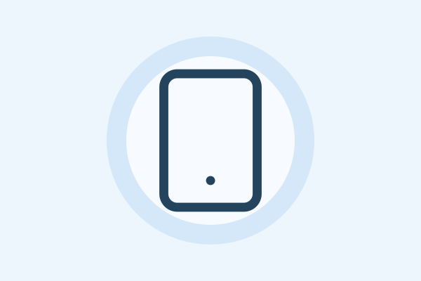
A smartphone combines mobile communication with general-purpose computing.
Also accepted: mobile phone, cellphone
Download SVGHeadphones convert electrical audio signals into sound near the ears.
Also accepted: headset
Download SVGA microphone converts sound waves into an electrical signal.
Also accepted: mic
Download SVGA speaker converts an audio signal into sound waves.
Also accepted: loudspeaker
Download SVGA digital camera records images using an electronic image sensor.
Also accepted: camera
Download SVGA document scanner converts physical pages into digital images.
Also accepted: document scanner
Download SVGA gamepad sends button and directional inputs to a game.
Also accepted: game controller, controller
Download SVGA joystick measures the direction or displacement of a control stick.
Also accepted: flight stick
Download SVGA projector casts an enlarged image onto a separate surface.
Also accepted: video projector
Download SVGOptical drives use lasers to read patterns on compatible discs.
Also accepted: cd, dvd, disc
Download SVG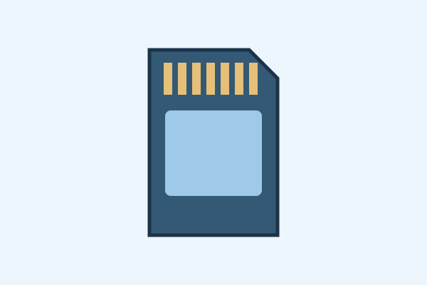
A memory card is a removable storage device that uses flash memory.
Also accepted: sd card, flash card
Download SVG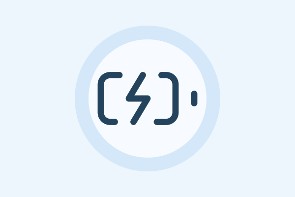
A rechargeable battery stores energy for use when external power is unavailable.
Also accepted: rechargeable battery
Download SVG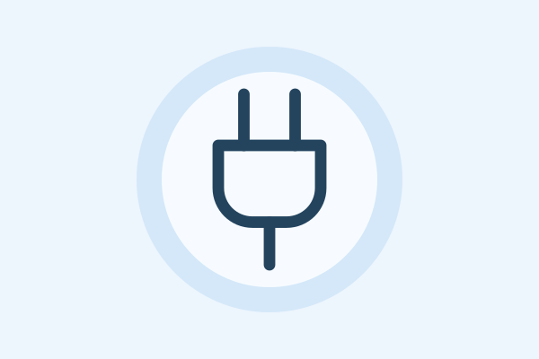
A power plug connects equipment to an electrical supply.
Also accepted: plug, electrical plug
Download SVGComputer fans move air to carry heat away from components.
Also accepted: fan, computer fan
Download SVGA power button signals a device to change its power state.
Also accepted: power switch
Download SVGAn Ethernet port provides a physical connection for a network cable.
Also accepted: network port, lan port
Download SVGWi-Fi connects compatible devices to a local network using radio waves.
Also accepted: wifi, wireless network
Download SVG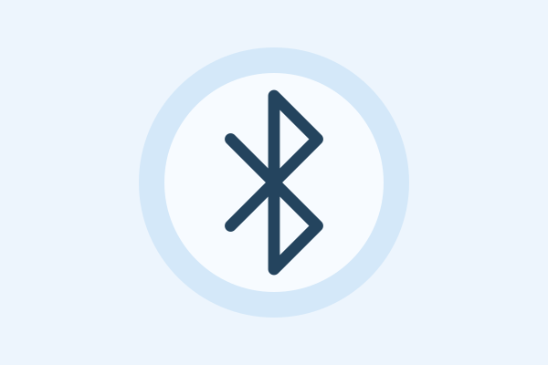
Bluetooth supports short-range wireless communication between devices.
Also accepted: bluetooth wireless
Download SVGA dish antenna focuses radio signals to or from a satellite.
Also accepted: satellite antenna
Download SVG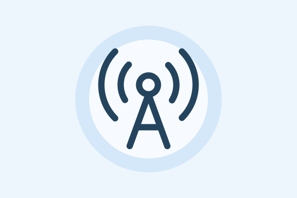
Cellular base stations provide radio coverage for mobile devices.
Also accepted: radio tower, mobile tower
Download SVGA computer network allows connected devices to exchange data.
Also accepted: network
Download SVGThe Web is a system of linked resources accessed using web technologies.
Also accepted: web, www
Download SVGEmail transfers messages between users through mail systems.
Also accepted: e-mail, electronic mail
Download SVGChat software lets people exchange short messages electronically.
Also accepted: instant messaging, message
Download SVGVideo calls transmit audio and images between participants.
Also accepted: video conference, video chat
Download SVGA search tool helps locate information matching a query.
Also accepted: search tool, magnifying glass
Download SVGA folder organizes files and other folders in a file system.
Also accepted: directory
Download SVGA file is a named collection of data stored by a file system.
Also accepted: computer file
Download SVGA text document stores written information as digital characters.
Also accepted: text file, document
Download SVGImage files encode visual information such as pixels or vector shapes.
Also accepted: picture file, image
Download SVGA video file stores a sequence of frames, often together with audio.
Also accepted: movie file, video
Download SVGAn audio file stores encoded sound for later playback.
Also accepted: sound file, audio
Download SVGAn archive combines files into a container and may also compress them.
Also accepted: zip file, compressed archive
Download SVGA recycle bin can retain deleted files temporarily so they may be restored.
Also accepted: trash, trash bin
Download SVGDownloading transfers data from another system to your device.
Also accepted: downloading
Download SVGUploading transfers data from your device to another system.
Also accepted: uploading
Download SVGSaving writes the current data to storage.
Also accepted: save file
Download SVGCopying places a duplicate of selected content on the clipboard.
Also accepted: copy command
Download SVGCutting prepares selected content to be moved through the clipboard.
Also accepted: cut command
Download SVGThe clipboard temporarily holds content copied or cut by the user.
Also accepted: pasteboard
Download SVGUndo reverses a supported recent editing action.
Also accepted: undo command
Download SVGRedo reapplies an action that was previously undone.
Also accepted: redo command
Download SVGZooming in enlarges the displayed view without necessarily changing stored data.
Also accepted: magnify
Download SVGZooming out shows a larger area of a document or image at once.
Also accepted: reduce zoom
Download SVGA lock symbol commonly indicates that access or editing is restricted.
Also accepted: padlock
Download SVGA key symbol often represents a credential or permission used to obtain access.
Also accepted: access key
Download SVGShield symbols commonly represent protective security features.
Also accepted: shield, protection
Download SVGFingerprint recognition is one method of biometric authentication.
Also accepted: biometric fingerprint
Download SVG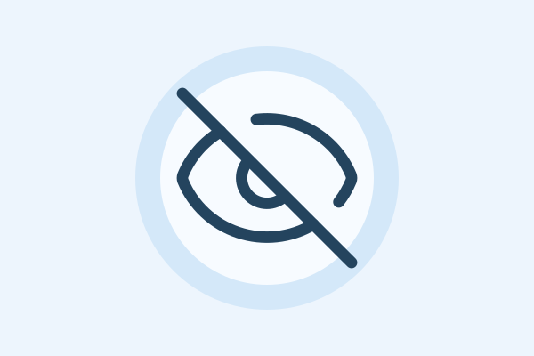
Password masking hides entered characters from nearby observers.
Also accepted: hide, hidden password
Download SVGA QR code encodes data in a two-dimensional pattern readable by cameras.
Also accepted: quick response code
Download SVGA barcode represents data using a machine-readable visual pattern.
Also accepted: bar code
Download SVGA location marker identifies a position on a digital map.
Also accepted: map pin, location marker
Download SVGCalendar applications organize dates, events and reminders.
Also accepted: digital calendar
Download SVGComputer clocks help applications measure time and schedule actions.
Also accepted: digital clock
Download SVGA calculator application performs numerical operations.
Also accepted: calculator app
Download SVGPresentation software arranges content into slides for an audience.
Also accepted: slide presentation, slideshow
Download SVG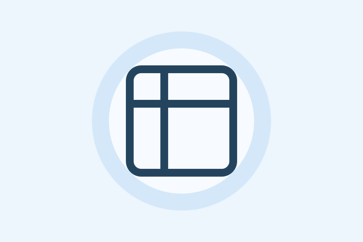
A spreadsheet organizes data in cells and can calculate results using formulas.
Also accepted: worksheet
Download SVGA bar chart compares values using the lengths of rectangular bars.
Also accepted: column chart, bar graph
Download SVGA digital brush applies marks to an image or canvas.
Also accepted: brush tool
Download SVGA pencil icon commonly indicates drawing or editing.
Also accepted: pencil, edit tool
Download SVGA color palette helps users choose or organize colors.
Also accepted: palette
Download SVG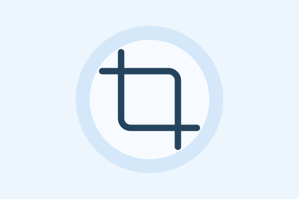
Cropping removes outer portions of an image from the displayed composition.
Also accepted: crop
Download SVGSettings allow users to configure supported application behavior.
Also accepted: preferences, gear
Download SVGA terminal provides a text interface for interacting with a command-line program.
Also accepted: command line, console
Download SVGSource code contains instructions written in a programming language.
Also accepted: code, program code
Download SVGA software bug is a defect that can cause incorrect behavior.
Also accepted: bug
Download SVGMany programming languages use curly braces to group blocks or represent structures.
Also accepted: braces
Download SVGSquare brackets are used for indexing or collection syntax in many languages.
Also accepted: brackets
Download SVGA hyperlink connects a resource to another location or resource.
Also accepted: link
Download SVGA browser bookmark saves a reference to a page for later access.
Also accepted: web bookmark
Download SVGNotifications draw attention to events or changes in an application.
Also accepted: alert, notification bell
Download SVGA user account associates an identity with access and preferences.
Also accepted: user, account
Download SVGUser groups can organize people who share permissions or responsibilities.
Also accepted: group, multiple users
Download SVGA contact list stores details used to reach people.
Also accepted: address book, contact card
Download SVGRefreshing requests or reconstructs the current view using updated information.
Also accepted: reload
Download SVGHelp interfaces explain how to use a product or resolve common questions.
Also accepted: help button
Download SVGAn information icon points to explanatory details.
Also accepted: info
Download SVGSigning in establishes an authenticated session for an account.
Also accepted: login, log in
Download SVGSigning out ends the active authenticated session in an application.
Also accepted: logout, log out
Download SVGAn orderly shutdown closes operating-system activity before powering down.
Also accepted: power off
Download SVG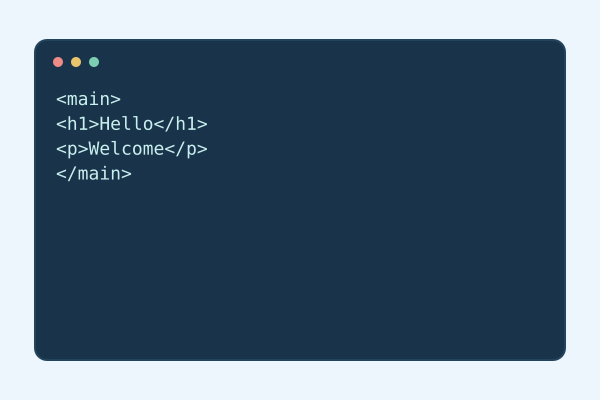
HTML describes the structure and meaning of web content.
Also accepted: hypertext markup language
Download SVG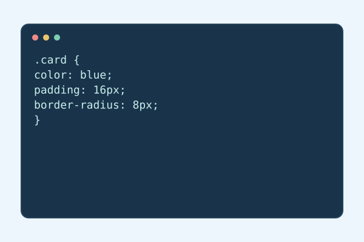
CSS controls the presentation of structured documents.
Also accepted: cascading style sheets
Download SVG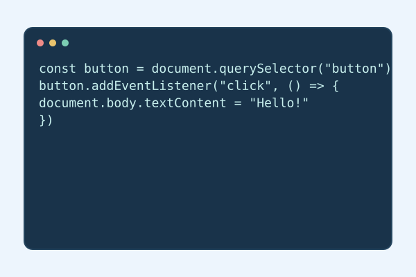
JavaScript can respond to user events and update web pages.
Also accepted: js
Download SVG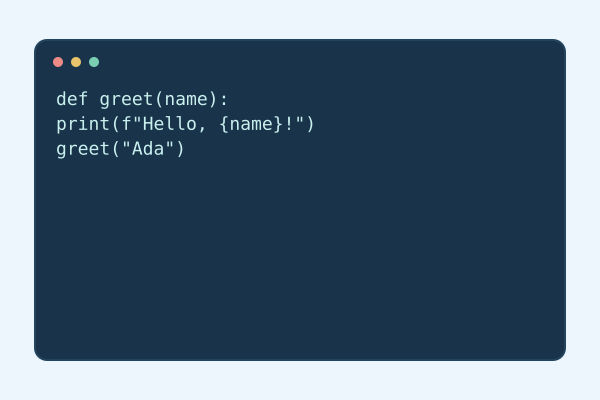
Python uses indentation to delimit blocks of code.
Also accepted: python language
Download SVG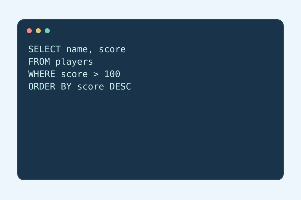
SQL is used to define, query and modify relational data.
Also accepted: structured query language
Download SVG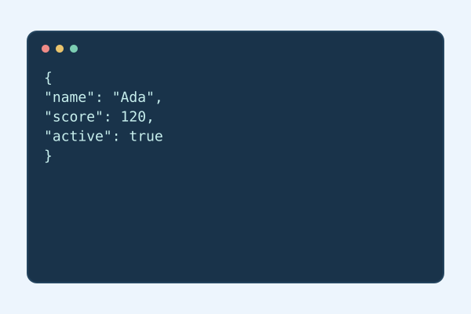
JSON represents data using objects, arrays, strings, numbers, booleans and null.
Also accepted: javascript object notation
Download SVG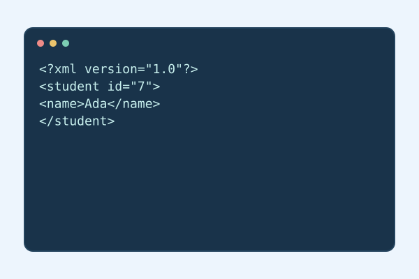
XML uses nested tags to encode structured information.
Also accepted: extensible markup language
Download SVG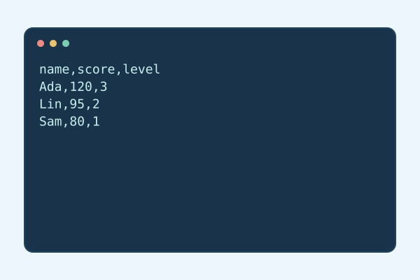
CSV represents tabular data using delimited text records.
Also accepted: comma separated values
Download SVG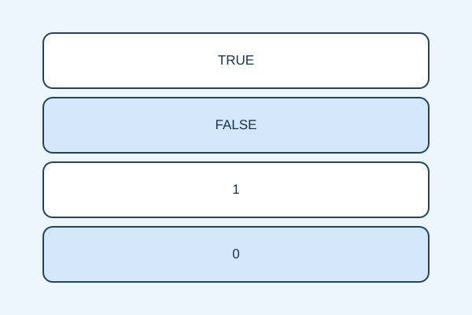
A Boolean value has one of two logical states: true or false.
Also accepted: bool, boolean value
Download SVG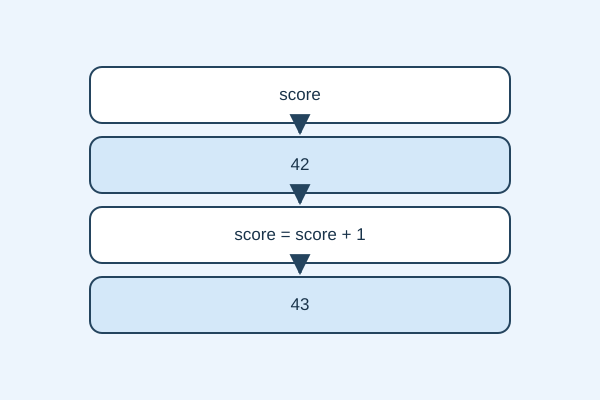
A variable provides a name through which a program can refer to a value.
Also accepted: program variable
Download SVG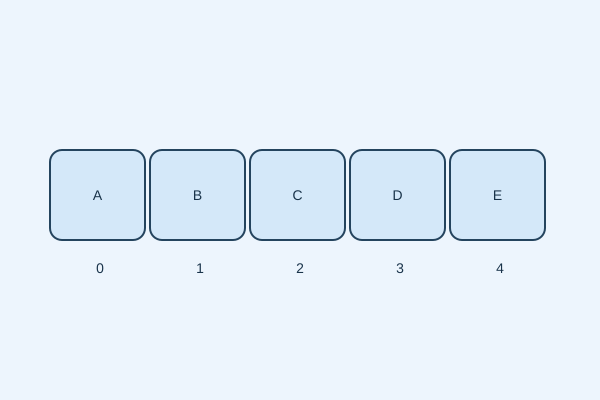
An array stores an ordered sequence of values accessible by index.
Also accepted: list, indexed array
Download SVG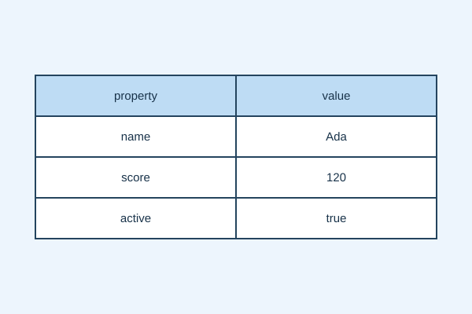
An object can group related values under named properties.
Also accepted: dictionary, record
Download SVG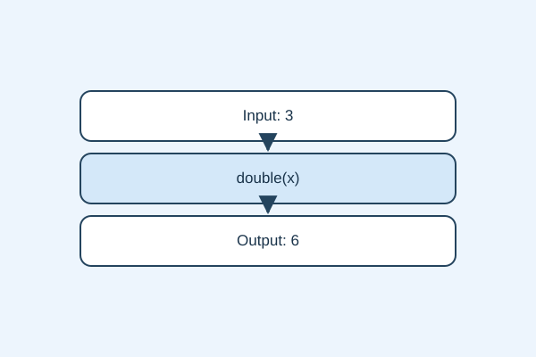
A function groups reusable instructions and can accept inputs and return a result.
Also accepted: procedure, subroutine
Download SVG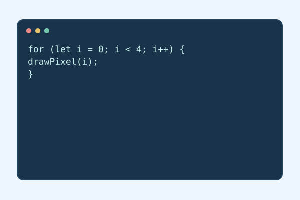
A loop repeats a block of code while its continuation rule permits.
Also accepted: iteration, for loop
Download SVG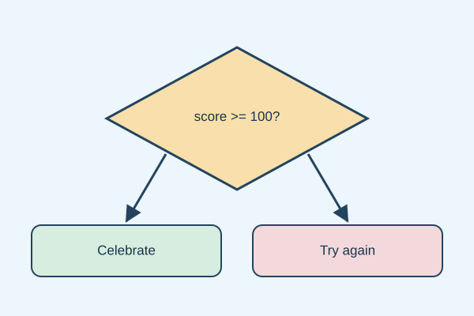
A conditional selects a branch based on a Boolean expression.
Also accepted: if statement, if else
Download SVG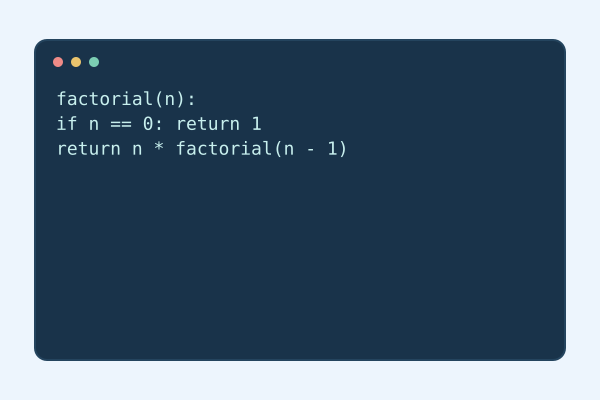
A recursive function calls itself on a smaller problem and needs a stopping condition.
Also accepted: recursive function
Download SVG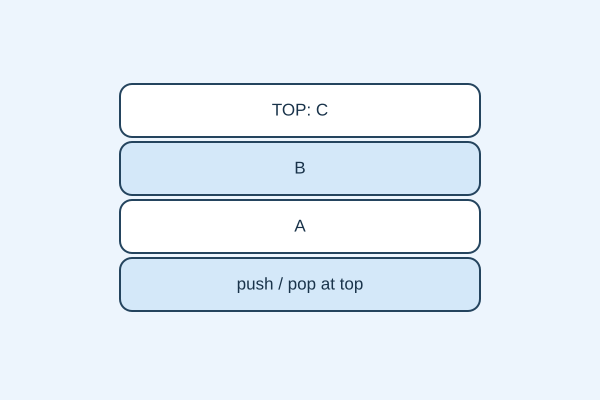
A stack removes the most recently added item first.
Also accepted: lifo, last in first out
Download SVG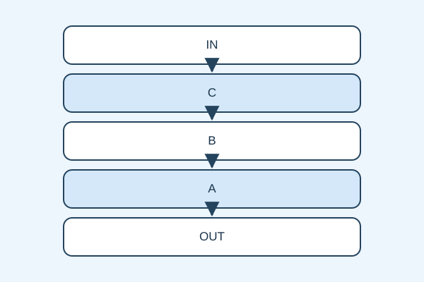
A queue normally removes items in the order they were added.
Also accepted: fifo, first in first out
Download SVG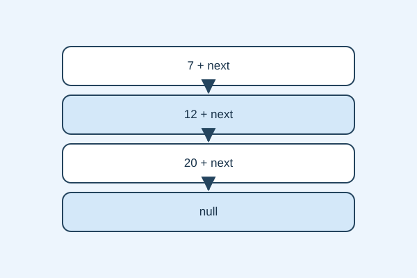
A linked list connects elements through references to subsequent elements.
Also accepted: singly linked list
Download SVG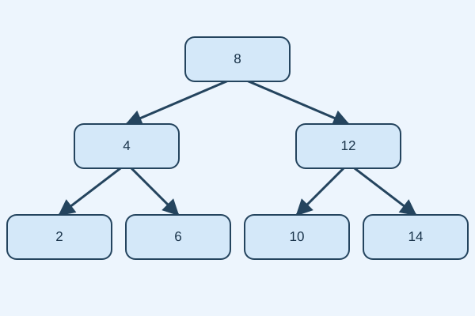
Each node in a binary tree has at most two children.
Also accepted: binary tree structure
Download SVG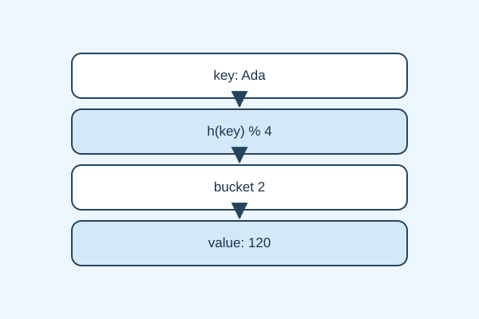
A hash table uses a hash function to map keys to storage locations.
Also accepted: hash map, hashmap
Download SVG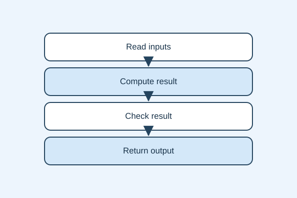
An algorithm is a finite description of steps for solving a problem.
Also accepted: procedure steps
Download SVG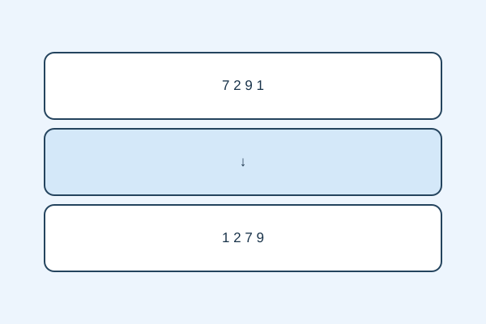
Sorting arranges items according to a chosen order.
Also accepted: sort, ascending sort
Download SVG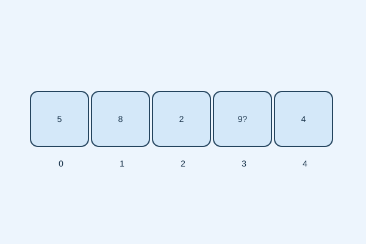
Linear search checks items in sequence until it finds a match or reaches the end.
Also accepted: sequential search
Download SVG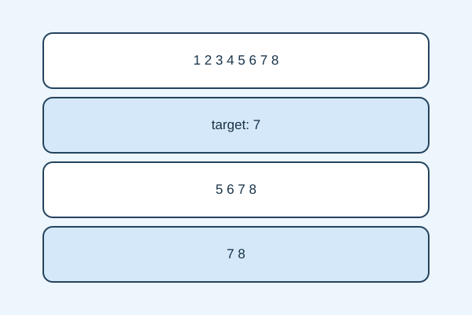
Binary search repeatedly halves the search interval in sorted data.
Also accepted: halving search
Download SVG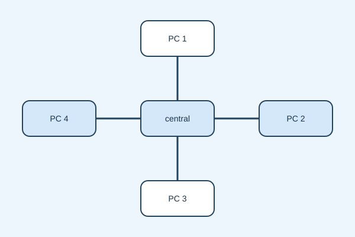
In a star topology, devices connect through a central point.
Also accepted: star network
Download SVG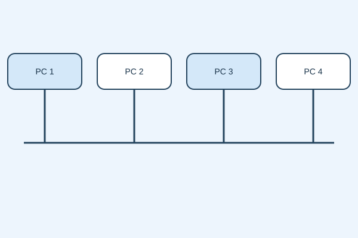
A bus topology connects devices along a shared communication backbone.
Also accepted: bus network
Download SVG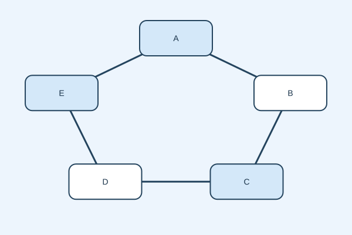
A ring topology connects nodes in a closed loop.
Also accepted: ring network
Download SVG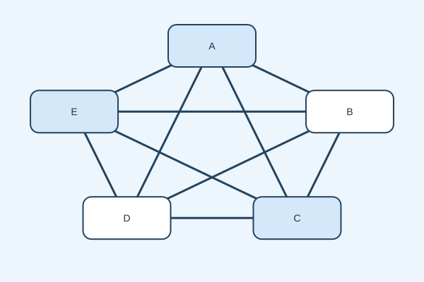
A mesh topology provides multiple interconnections between nodes.
Also accepted: mesh network
Download SVG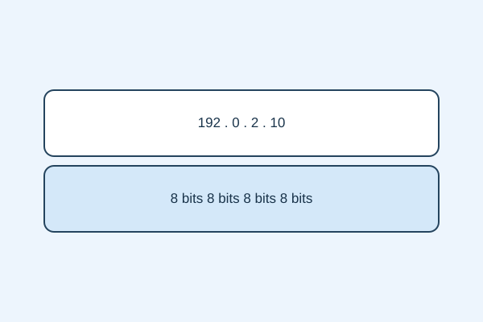
An IP address identifies a network interface for communication over IP.
Also accepted: internet protocol address, ipv4
Download SVG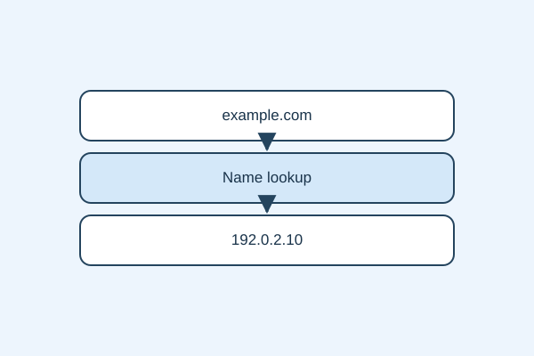
DNS resolves domain names to records such as IP addresses.
Also accepted: domain name system
Download SVG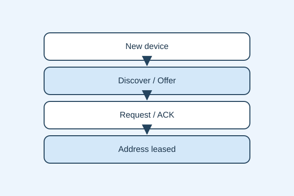
DHCP can automatically lease IP configuration to a device.
Also accepted: dynamic host configuration protocol
Download SVG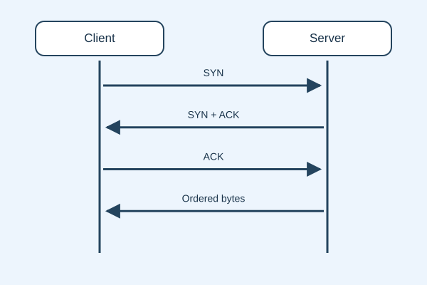
TCP provides a reliable, ordered byte stream between endpoints.
Also accepted: transmission control protocol
Download SVG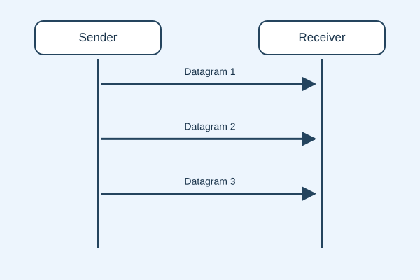
UDP sends datagrams without providing TCP-style delivery or ordering guarantees.
Also accepted: user datagram protocol
Download SVG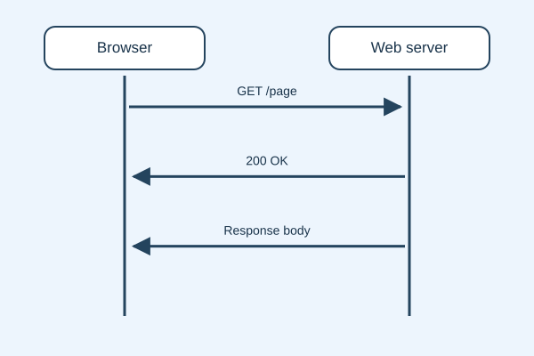
HTTP defines request and response semantics for web resources.
Also accepted: hypertext transfer protocol
Download SVG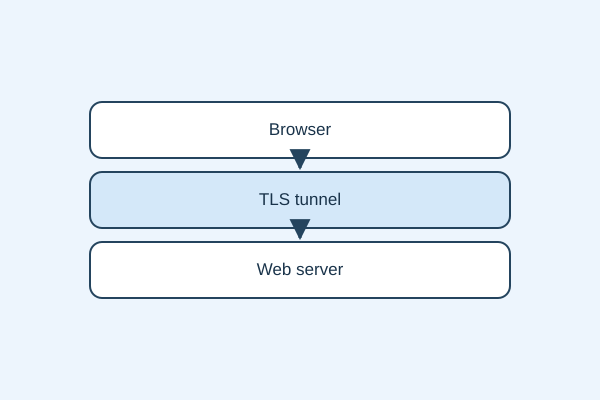
HTTPS uses TLS to protect HTTP communication in transit.
Also accepted: http secure
Download SVGA URL describes a resource location and how to access it.
Also accepted: uniform resource locator
Download SVGA VPN creates a protected virtual connection across another network.
Also accepted: virtual private network
Download SVGA proxy acts as an intermediary for requests between a client and another server.
Also accepted: proxy
Download SVGA load balancer distributes incoming work across multiple service instances.
Also accepted: load balancing
Download SVGAn Ethernet switch forwards frames using learned MAC-address information.
Also accepted: switch, ethernet switch
Download SVGA wireless access point connects wireless clients to a network.
Also accepted: wireless access point, wifi access point
Download SVGAn IPv4 subnet mask distinguishes network bits from host bits.
Also accepted: netmask
Download SVGTransport port numbers distinguish services or communication endpoints on a host.
Also accepted: port number, port
Download SVGA packet carries a portion of data together with protocol information used for delivery.
Also accepted: network packet, data packet
Download SVGClient-server systems separate service requesters from service providers.
Also accepted: client server
Download SVGPeer-to-peer systems allow participants to act as both resource providers and consumers.
Also accepted: p2p, peer to peer network
Download SVGA cache stores reusable results or data to reduce repeated retrieval work.
Also accepted: caching
Download SVGHTTP cookies store small pieces of state that a browser can send with matching requests.
Also accepted: http cookie, browser cookie
Download SVGA session associates multiple interactions with an ongoing user context.
Also accepted: web session, user session
Download SVGPassword hashing stores a one-way derived value; password-specific algorithms can slow guessing attacks.
Also accepted: password hash
Download SVGEncryption transforms plaintext into ciphertext using an algorithm and key.
Also accepted: data encryption
Download SVGPhishing attempts to trick people into disclosing information or taking unsafe actions.
Also accepted: phishing attack
Download SVGMalware is software designed to perform harmful or unauthorized actions.
Also accepted: malicious software
Download SVGRansomware may block access to files or systems and demand payment.
Also accepted: ransomware attack
Download SVGMulti-factor authentication combines evidence from distinct factor categories.
Also accepted: mfa, 2fa, two factor authentication
Download SVGA backup is a separate copy of data intended to support recovery.
Also accepted: data backup
Download SVGVersion control records changes so earlier states can be compared or recovered.
Also accepted: source control, vcs
Download SVGA Git branch is a movable reference to a commit.
Also accepted: branch, branching
Download SVGA merge combines development histories, potentially requiring conflict resolution.
Also accepted: merge, merging
Download SVGA Git commit records a snapshot together with metadata and references to parent commits.
Also accepted: commit
Download SVGA unit test checks a small unit of behavior against an expected result.
Also accepted: unit testing
Download SVGA debugger can pause execution and inspect variables and control flow.
Also accepted: debugging tool
Download SVGAn exception transfers control from normal execution to an applicable handler.
Also accepted: error handling, try catch
Download SVGAn API defines how software components can request functionality or exchange data.
Also accepted: application programming interface
Download SVGREST is an architectural style whose constraints include a uniform interface and stateless interactions.
Also accepted: representational state transfer
Download SVGCRUD groups four basic persistent-data operations: create, read, update and delete.
Also accepted: create read update delete
Download SVGA primary key uniquely identifies rows and does not allow null key values.
Also accepted: pk
Download SVGA foreign key constrains references to matching values in another key.
Also accepted: fk
Download SVGAn index is an auxiliary data structure that can speed up suitable queries.
Also accepted: index
Download SVGA transaction groups work that can be committed together or rolled back.
Also accepted: database transaction
Download SVGNormalization organizes relational data to reduce certain redundancies and update anomalies.
Also accepted: database normalization
Download SVGContainers isolate processes while normally sharing the host operating-system kernel.
Also accepted: software container, docker container
Download SVGA virtual machine runs a guest environment on virtualized hardware.
Also accepted: vm
Download SVGAn operating system manages hardware resources and provides services for programs.
Also accepted: os
Download SVGA B-tree keeps keys sorted in balanced multiway nodes, making it useful for storage indexes.
Also accepted: btree, b tree
Download SVGRed-black trees use color and structural rules to keep search paths logarithmic in size.
Also accepted: red black tree
Download SVGAn AVL tree maintains a height difference of at most one between each node's subtrees.
Also accepted: avl
Download SVGA min-heap keeps each parent's key no greater than its children's keys.
Also accepted: min heap, heap
Download SVGA trie stores strings along shared prefix paths.
Also accepted: prefix tree
Download SVGBreadth-first search explores a graph by increasing edge distance from the start.
Also accepted: bfs, breadth first search
Download SVGDepth-first search follows a path deeply before backtracking to explore alternatives.
Also accepted: dfs, depth first search
Download SVGDijkstra's algorithm finds shortest paths when edge weights are nonnegative.
Also accepted: dijkstra, dijkstra algorithm
Download SVGA-star prioritizes nodes using a known path cost plus a heuristic estimate of remaining cost.
Also accepted: a star, a*, astar
Download SVGQuicksort partitions elements around a pivot and recursively sorts the partitions.
Also accepted: quick sort
Download SVGMerge sort divides a sequence and combines sorted subsequences.
Also accepted: mergesort
Download SVGDynamic programming reuses solutions to overlapping subproblems.
Also accepted: dp
Download SVGMemoization stores results of function calls so repeated inputs can reuse them.
Also accepted: memoisation
Download SVGBig O notation describes an asymptotic upper bound on growth.
Also accepted: big o, asymptotic complexity
Download SVGA race condition occurs when behavior depends on the timing of concurrent operations.
Also accepted: data race
Download SVGA deadlock can arise when tasks hold resources while cyclically waiting for one another.
Also accepted: circular wait
Download SVGA mutex restricts access to a protected region to one owner at a time.
Also accepted: mutual exclusion lock
Download SVGA counting semaphore controls access using a count of available permits.
Also accepted: counting semaphore
Download SVGA thread pool reuses workers to execute queued tasks.
Also accepted: worker pool
Download SVGThe JavaScript event loop coordinates queued work when the call stack is available.
Also accepted: javascript event loop
Download SVGA Promise represents an eventual result and settles by fulfillment or rejection.
Also accepted: javascript promise
Download SVGA closure retains access to its lexical environment after the outer function returns.
Also accepted: lexical closure
Download SVGJavaScript object lookup can follow the prototype chain when a property is not found locally.
Also accepted: prototype chain, prototypal inheritance
Download SVGPolymorphism lets different implementations respond through a common interface.
Also accepted: subtype polymorphism
Download SVGDependency injection supplies a component's dependencies from outside it.
Also accepted: di
Download SVGThe observer pattern notifies registered dependents when a subject changes.
Also accepted: publish subscribe, pub sub
Download SVGThe singleton pattern restricts a class to one instance and provides access to it.
Also accepted: singleton
Download SVGA factory centralizes creation of objects behind a common creation interface.
Also accepted: factory method, factory
Download SVGUnder a network partition, a distributed system cannot guarantee both linearizable consistency and availability for every request.
Also accepted: cap
Download SVGACID describes transaction properties: atomicity, consistency, isolation and durability.
Also accepted: atomicity consistency isolation durability
Download SVGMVCC lets transactions observe suitable versions of data rather than always blocking one another.
Also accepted: multiversion concurrency control
Download SVGOptimistic concurrency checks whether data changed before accepting an update.
Also accepted: optimistic locking
Download SVGPessimistic locking reserves access before performing conflicting work.
Also accepted: pessimistic concurrency control
Download SVGTwo-phase commit first prepares participants, then tells them to commit or abort.
Also accepted: 2pc, two phase commit
Download SVGRaft organizes replicated state around elected leaders and replicated logs.
Also accepted: raft
Download SVGWith no new updates and successful propagation, eventually consistent replicas converge.
Also accepted: eventually consistent
Download SVGSharding partitions a dataset across storage nodes.
Also accepted: database sharding
Download SVGReplication maintains copies of data on multiple nodes.
Also accepted: data replication
Download SVGWrite-ahead logging records recovery information before the corresponding data-page changes are persisted.
Also accepted: wal, write ahead logging
Download SVGA database execution plan describes operations used to produce a query result.
Also accepted: query plan, execution plan
Download SVGSQL injection occurs when untrusted input is interpreted as part of a SQL command; parameterized queries separate data from code.
Also accepted: sqli
Download SVGCross-site scripting lets untrusted content execute as script in another user's browser.
Also accepted: xss, cross site scripting
Download SVGCSRF tricks a signed-in browser into sending an unintended request to another site.
Also accepted: csrf, cross site request forgery
Download SVGA signed compact JWT commonly has base64url-encoded header, payload and signature segments.
Also accepted: jwt
Download SVGPublic-key cryptography uses mathematically related public and private keys.
Also accepted: asymmetric cryptography, asymmetric encryption
Download SVGA digital signature allows a verifier to check message integrity and the signer's possession of a private key.
Also accepted: signature
Download SVGA TLS handshake negotiates connection parameters and establishes traffic keys.
Also accepted: transport layer security handshake
Download SVGA zero-knowledge proof demonstrates a statement without revealing additional knowledge beyond its validity.
Also accepted: zkp, zero knowledge
Download SVGA Merkle tree combines child hashes so a root hash commits to the underlying data.
Also accepted: hash tree
Download SVGA Bloom filter can report false positives, but a standard correctly maintained filter has no false negatives for inserted items.
Also accepted: bloomfilter
Download SVG